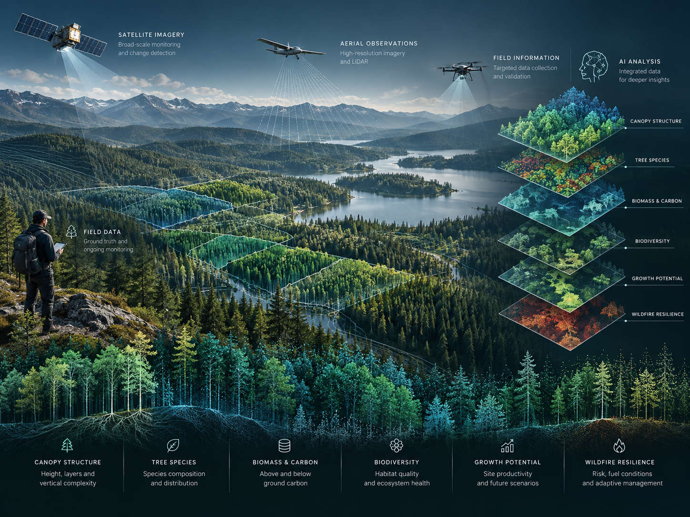
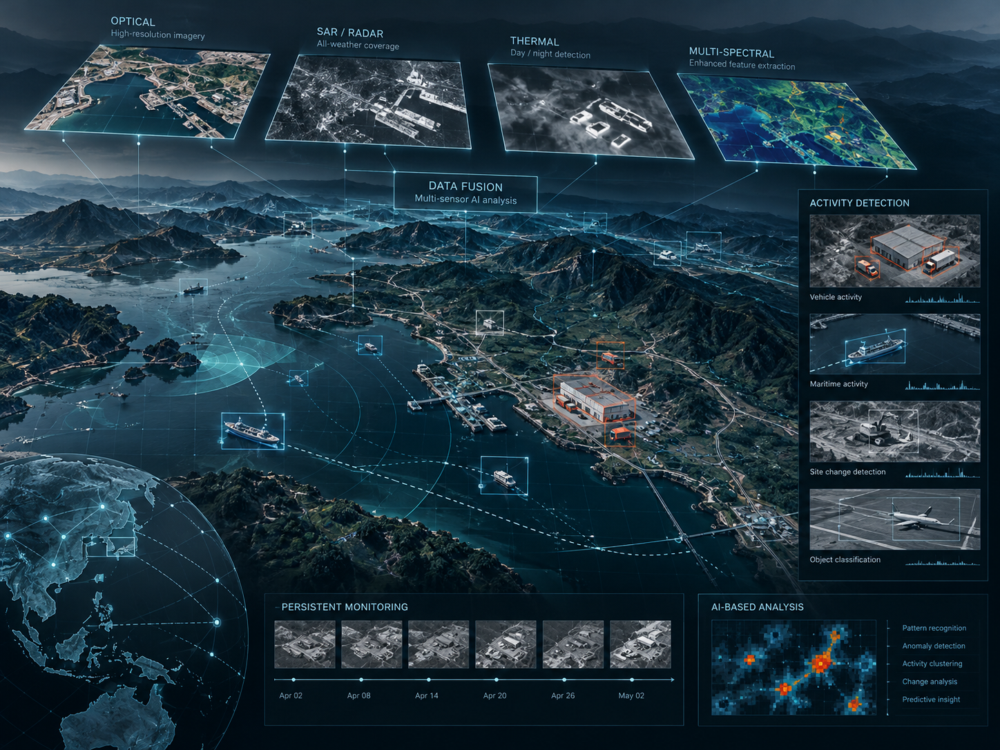
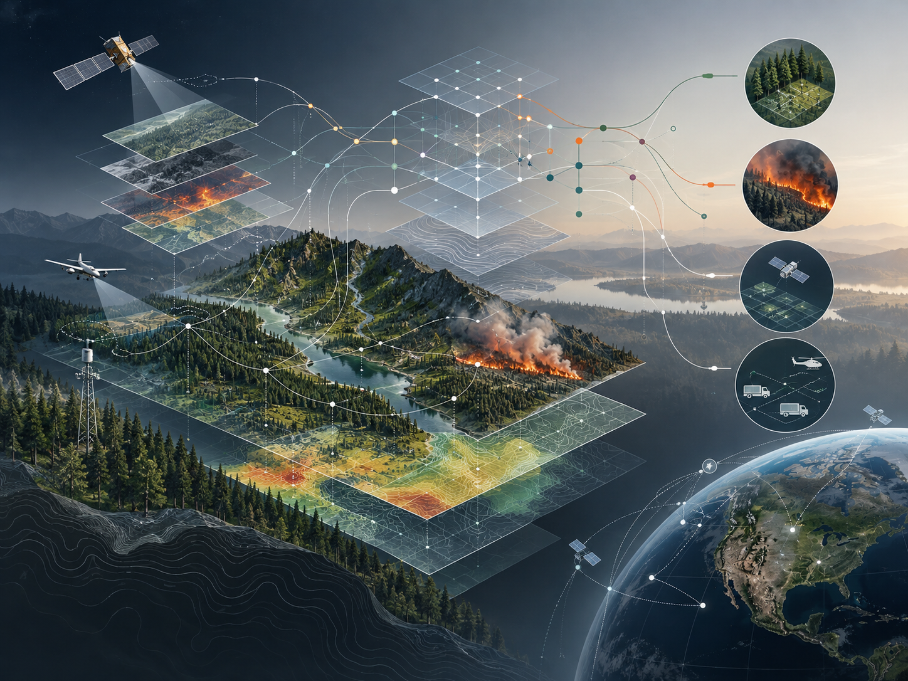

01
Climate-Smart Forestry
Forest inventory, biomass, carbon, biodiversity, growth, regeneration, wildfire resilience and change monitoring.
Explore forestryPlanetQ AI develops advanced geospatial intelligence using remote sensing, artificial intelligence and emerging computing approaches to support climate-smart forestry, environmental resilience and complex operational decisions.
Hero visual: conceptual illustration.
We combine domain knowledge, multi-source geospatial data and advanced computation to address problems where timely, spatially consistent information matters.
Forest inventory, biomass, carbon, biodiversity, growth, regeneration, wildfire resilience and change monitoring.
Explore forestryMulti-sensor fusion, persistent monitoring, activity detection and AI-enabled situational awareness.
Explore defence R&DQuantum, quantum-inspired and hybrid approaches for optimization, wildfire and geospatial decision support.
Explore quantum R&DPlanetQ AI combines satellite Earth observation, LiDAR, aerial imagery, forest inventory information and AI to support more timely, consistent and spatially detailed understanding of forest resources and change.

Tree species, canopy height, basal area, stand structure and spatial characterization of forest condition.
Above-ground biomass, merchantable volume, carbon information and residual biomass under alternative utilization scenarios.
Growth-rate assessment, tree vigour, forest health, regeneration characterization and repeat monitoring.
Structural diversity, habitat-relevant indicators, late-successional and old-growth characteristics, and ecosystem change.
Fuel-type characterization, vegetation condition, disturbance detection and forest-resilience information.
Spatial screening, prioritization, scenario analysis and information products designed to complement field knowledge and operational planning.
Satellite, SAR, LiDAR, aerial, UAV, field and environmental information.
Machine learning, deep learning, computer vision, spectral analysis and data fusion.
Structure, biomass, change, activity, resilience and spatial patterns.
Prioritization, scenarios, risk assessment and decision-ready geospatial intelligence.

PlanetQ AI is advancing AI-enabled remote-sensing approaches for situational awareness, persistent monitoring and decision support. Public-facing descriptions remain intentionally high-level and unclassified.
Integration of complementary sensing and geospatial information to develop a more complete and timely understanding of an area, event or evolving operational context.
AI-based analysis of multi-temporal observations to identify meaningful change, characterize activity and support persistent monitoring of areas of interest.
PlanetQ AI is exploring quantum, quantum-inspired and hybrid quantum-classical approaches for optimization and machine-learning problems in forestry, wildfire and geospatial intelligence.
Established AI and geospatial methods remain the foundation for practical analysis, while quantum-ready approaches are investigated where combinatorial complexity and competing constraints can make optimization difficult.

Research on complex relationships among vegetation, fuels, terrain, weather and fire behaviour using advanced machine-learning approaches.
Explore treatment priorities while balancing wildfire risk, cost, accessibility, biomass, carbon and ecological objectives.
Investigate scheduling and allocation problems involving sensors, satellites, UAVs and other constrained geospatial resources.
PlanetQ AI integrates sensing, analytics and advanced computing into a common geospatial intelligence workflow.
Multispectral, hyperspectral, SAR, LiDAR, aerial and UAV observations.
Machine learning, deep learning, computer vision and geospatial AI.
Multi-sensor, multi-temporal and field + Earth observation integration.
High-performance computing, quantum machine learning and quantum-inspired optimization research.
PlanetQ AI Inc. is a New Brunswick-based research and technology company developing advanced geospatial intelligence solutions using Earth observation, artificial intelligence and emerging computing technologies.
Led by Dr. Rakesh Mishra, President & CEO, the company brings experience in remote sensing, LiDAR, satellite analytics, hyperspectral imaging, computer vision, multi-sensor fusion and applied AI for forestry, environmental and defence-related research.
We welcome research and technology collaborations in climate-smart forestry, wildfire resilience, Earth observation, defence-related geospatial intelligence and advanced AI/quantum research.